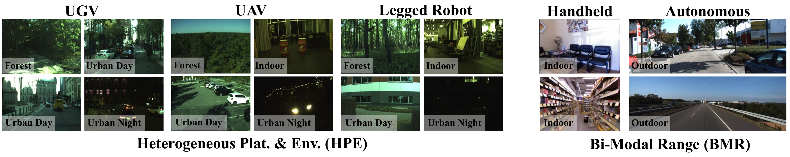
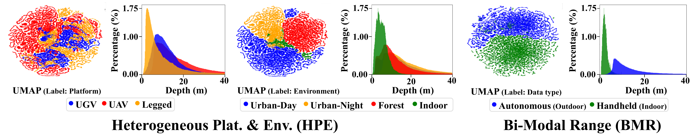
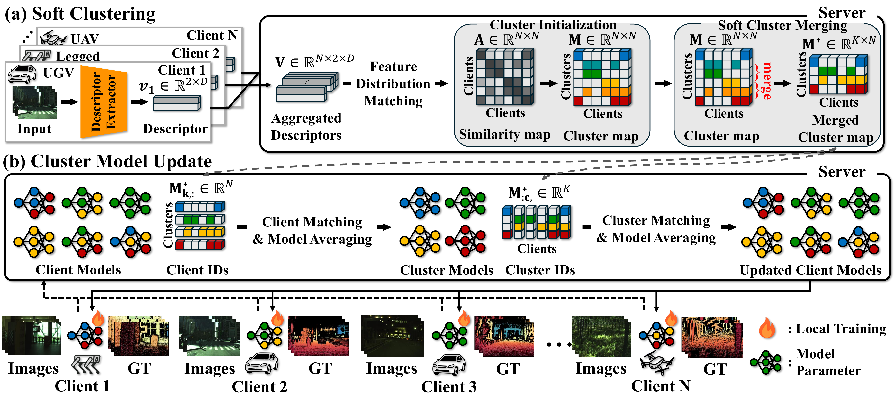
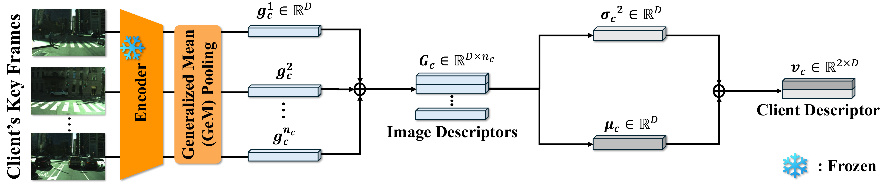
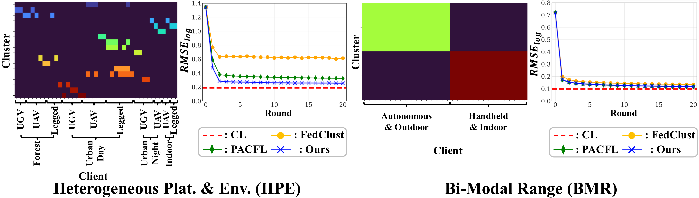

Qualitative Results

Federated learning enables distributed training without transferring raw robot perception data, but depth estimation under real robotic deployments faces severe domain shifts across clients. In practice, client distributions often overlap across platforms, environments, and sensing conditions, which breaks the clearly separated client-domain assumption used by conventional clustered federated learning.
FeDepth is a descriptor-based clustered federated learning framework for monocular depth estimation. It models client relationships through soft clustering, allowing clients to participate in multiple clusters and capture continuous, ambiguous domain transitions observed in heterogeneous robotic environments.
Centralized learning requires collecting high-bandwidth sensory data at a server, creating communication, scalability, and privacy challenges for real-world robot fleets. Standard federated learning avoids raw-data transfer, but a single global model struggles when clients differ by robot platform, viewpoint, motion dynamics, environment, camera parameters, and depth range.




| Scenario | Model | FedAvg | PACFL† | FeDepth |
|---|---|---|---|---|
| HPE | NeWCRFs | 0.366 | 0.318 | 0.249 |
| HPE | DCDepth | 0.351 | 0.321 | 0.293 |
| BMR | DCDepth | 0.158 | 0.082 | 0.082 |
Values report Abs Rel, where lower is better. PACFL† denotes the descriptor-based PACFL variant used in the paper.

Publication pending. BibTeX will be added after the paper is public.